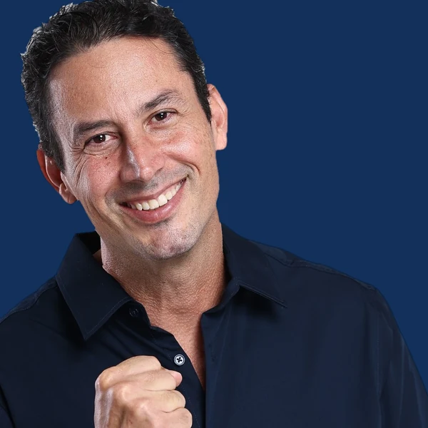

Segurança sem medo
Segurança efetiva para quem mora no Distrito Federal, feita por quem comandou batalhões da PMDF.
Eleições 2026 · Distrito Federal
Uma vida dedicada a servir
Humildade, fé e compromisso com as pessoas.
28 anos de Polícia Militar do Distrito Federal.

O gesto que decide
No dia 4 de outubro, o primeiro número que a urna pede é o de deputado distrital. Digite 20122 aqui e veja exatamente o que vai aparecer na tela.
Número:
Nome: Coronel Michello
Partido: PODEMOS
20 · Podemos — Mudar o Brasil
Aperte a tecla:
CONFIRMA para confirmar este voto
CORRIGE para digitar novamente

CandidatoVocê também pode digitar pelo teclado.
Voto registrado no treino.
20122
Guarde esse número. Ele só existe uma vez.

Quem é
Brasiliense, 49 anos, casado com a jornalista Natalie Machado Bueno e pai de dois filhos. Michello entrou na Polícia Militar do Distrito Federal em 1998 e concluiu o curso de formação de oficiais em 2000. De lá para cá foram quase três décadas dentro da corporação — instrutor de tiro, serviço junto à Força Nacional na Cidade de Deus (RJ), negociador de crises e, por dez anos, a voz da PMDF diante da imprensa.
Como negociador, o trabalho era falar com quem ninguém queria falar: manter a linha aberta com criminosos para trazer reféns de volta em segurança. Foi oficial da Força Nacional e gerenciador de crise, com comando de operações no Rio de Janeiro e no Distrito Federal, além de especializações internacionais. Foi essa escola — ouvir primeiro, decidir depois — que ele levou para o Centro de Comunicação Social e, mais tarde, para o comando de dois batalhões: o 7º BPM (Cruzeiro, Octogonal e Sudoeste) em 2024 e o 3º BPM (Asa Norte) em 2025.
Católico praticante, defende que servir ao próximo é missão, não cargo. É esse o compromisso que ele leva agora à Câmara Legislativa do Distrito Federal.
Será uma campanha limpa e honesta, porque a minha proposta principal é ajudar a população.
Michello Bueno, ao anunciar sua primeira candidatura — De Olho no Entorno, ago/2022
28 anos de serviço
Cada degrau abaixo tem data, unidade e registro público. Nada aqui é promessa — é histórico funcional.
Entra na Polícia Militar do Distrito Federal e começa a carreira na ponta, no policiamento.
Conclui a formação de oficiais pela PMDF. Depois soma formação na área de Direito Público.
Atua como instrutor de tiro, serve junto à Força Nacional na Cidade de Deus (RJ) e se torna negociador da corporação, com contato direto com criminosos em ocorrências com reféns.
Assume o Centro de Comunicação Social. Passa a ser a ponte diária entre a corporação e a imprensa do DF — rádio, TV, jornal e portais.
Progressão na carreira de oficial, seguindo à frente da comunicação social da PMDF.
De folga em casa, entra em um prédio em chamas, sobe ao segundo andar tomado por fumaça e retira uma idosa em segurança. Volta ao prédio para procurar o gato dela e ajuda a conter as chamas até a chegada dos bombeiros.
GPS BrasíliaDepois de quase dez anos como porta-voz, assume o comando do batalhão responsável por Cruzeiro, Octogonal e Sudoeste.
MetrópolesRecebe o comando do 3º Batalhão, responsável pela Asa Norte, em solenidade com a tropa, veteranos e autoridades.
Portal da PMDFFiliado ao Podemos, disputa uma das 24 cadeiras da Câmara Legislativa do Distrito Federal na eleição de 4 de outubro de 2026.
Ordem sem medo
As quatro bandeiras oficiais da campanha, mais duas frentes que nascem direto dos 28 anos de corporação.
Segurança efetiva para quem mora no Distrito Federal, feita por quem comandou batalhões da PMDF.
Ser a voz da segurança pública em conversa constante com quem vive o problema todo dia.
Gerenciamento de crise e comando de operações no Rio de Janeiro e no DF, com especializações internacionais.
Humildade, fé e compromisso com as pessoas: o compromisso do Coronel é com você e com a sua família.
Efetivo suficiente, equipamento que funciona, plano de carreira respeitado e atenção real à saúde mental do policial e do bombeiro.
O morador sabe onde está o problema da quadra dele. Fortalecer os CONSEGs e transformar a reunião de bairro em pauta de comando, com retorno e prazo.
Nota para a equipe: as quatro primeiras bandeiras usam o texto oficial da landing
da campanha. As duas últimas estão marcadas como proposta em estudo — só publique
depois do aval do candidato e da conferência com o plano de governo registrado no TSE.
Para remover uma proposta, apague o <article> inteiro em index.html.
Comprovado
Todo número desta seção tem fonte pública. Clique e confira.
Por dez anos à frente da comunicação social, construiu um canal de confiança entre a corporação e a imprensa do DF. O resultado foi prático: operações e ocorrências passaram a chegar ao cidadão em telejornais, rádios e portais, e a população passou a enxergar o trabalho diário do policial.
Registro da CABE/PMDF ↗Atuou por anos como negociador da PMDF, estabelecendo contato direto com criminosos em ocorrências com reféns. Foi essa experiência que ele apontou como diferencial ao assumir a comunicação da corporação.
Metrópoles ↗No 7º BPM respondeu pela segurança de Cruzeiro, Octogonal e Sudoeste a partir de julho de 2024. Um ano depois, já tenente-coronel, assumiu o 3º BPM, responsável pela Asa Norte.
Jornal de Brasília ↗Em junho de 2024, alertado de um incêndio perto de casa, subiu ao segundo andar tomado por fumaça, ouviu o pedido de socorro de uma idosa e a carregou para fora. Voltou ao prédio para procurar o gato dela e ajudou a conter o fogo até os bombeiros chegarem. A idosa e o gato sobreviveram.
GPS Brasília ↗Em 2022 disputou a Câmara Legislativa pela primeira vez e recebeu 5.944 votos, ficando na suplência. Continuou na corporação, assumiu dois comandos e volta em 2026 com bagagem de comando que não tinha na primeira disputa.
Câmara Legislativa do DF ↗Na cerimônia de transmissão do comando do 7º BPM, a então comandante-geral da PMDF, Coronel Ana Paula Barros, afirmou publicamente o quanto foi difícil retirá-lo da assessoria de comunicação e destacou o papel dele em estreitar a relação da corporação com a imprensa.
CABE/PMDF ↗Em movimento
Entrevistas, conversas com a comunidade e os bastidores da campanha.
Na mídia
Matérias publicadas por veículos independentes ao longo dos anos. Nenhuma delas é conteúdo de campanha.
Quem conviveu
Moradores, colegas de farda e lideranças comunitárias que trabalharam com ele.
Nota para a equipe: os depoimentos abaixo estão marcados como EXEMPLO e aparecem com
tarja de aviso justamente para não irem ao ar por engano. Substitua por depoimentos reais,
com autorização de uso de imagem e nome, em assets/js/dados.js.
Ao trocar, apague o campo exemplo: true de cada item.
Financiamento coletivo
Essa campanha se sustenta com a doação de quem acredita no trabalho. Qualquer valor entra pelo QueroApoiar, plataforma de vaquinha eleitoral homologada pelo TSE, com a lista de doações aberta para consulta.
Faça parte dessa missão
Cadastre-se para receber as novidades, chamar o Michello para uma conversa na sua quadra ou ajudar na mobilização da sua região.
Aponte a câmera e vá direto para a página de apoio à campanha.
Para trocar o destino do QR, substitua o arquivo assets/img/qrcode.png.